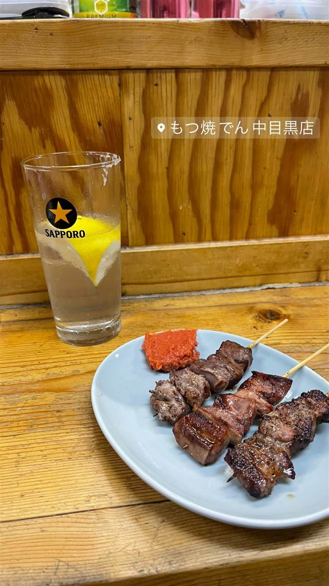

もつ焼でん 中目黒店
塩を縁につけたレモンサワーと大ぶり国産もつ焼き
もつ焼 でん 中目黒店
水道橋発祥のもつ焼きチェーン「もつ焼でん」の中目黒店。塩を縁につけた氷入りのレモンサワーと、新鮮な国産もつを炭火で焼き上げる大ぶりの串が名物で、気取らないカウンター酒場として人気を集める。
TRIVIA
豆知識
- 水道橋の本店は満席が当たり前で月商1100万円に達したこともあるという
- 運営会社は立喰いそば店「でん」も展開している
REVIEWS
世間の評判
3.42食べログ
安くて旨いもつ焼きと売り切れ
- 串は1本200〜300円ほどと安く旨いという評判で常連が多い
- レバー刺しやガツ刺しなど定番メニューの鮮度の良さを評価する声が多い
- 昭和的な雰囲気の中で肩肘張らず落ち着いて飲めるという声が多い
- 人気で早い時間から品切れになりやすくカウンターが狭いという指摘もある
食べログ 口コミ355件
| 創業 | 本店（水道橋）は2012年創業 |
|---|---|
| 系譜 | 「もつ焼でん」は水道橋を本店に、中目黒・西小山・蒲田・アメ横・佐渡金井など多店舗展開するもつ焼きチェーン。運営会社は株式会社田（代表・内田克彦氏）で、立喰いそば でんも同社が展開 |
| 看板 | もつ焼き各種（レバ刺し・ハツ・タンなど）とレモンサワー |
| こだわり | 塩をグラスの縁につけたソルティドッグ風の氷入りレモンサワーが名物。もつは新鮮な国産素材を使い、大ぶりでジューシーな串焼きに仕上げる |
| どこから | 都心 |
| 営業時間 | 日 休み |
| 予算 | 夜 ¥3,000～¥3,999 |
| 定休日 | 不定休（祝日） |
| 予約 | 予約不可 |
| 場所 | 中目黒駅 東京都目黒区青葉台1-30-14 |
| メモ | カウンター中心の立ち飲み風もつ焼き店。人気メニューは早い時間に売り切れることがある |
食べたもの：もつ焼きとレモンサワー
NEARBY
近い店・同じ系統の店
-
 ★
焼肉 中目黒駅
びーふてい 中目黒店
1988年創業、和牛一頭買いで味わう名物ガツン焼き
夜 ¥6,000～¥7,999
★
焼肉 中目黒駅
びーふてい 中目黒店
1988年創業、和牛一頭買いで味わう名物ガツン焼き
夜 ¥6,000～¥7,999
-
 ★
焼肉 中目黒
小野田商店
中目黒の路地裏、七輪で焼く500円前後のホルモン
夜 ¥3,000～¥3,999
★
焼肉 中目黒
小野田商店
中目黒の路地裏、七輪で焼く500円前後のホルモン
夜 ¥3,000～¥3,999
-
 ピザ 中目黒駅
聖林館（セイリンカン）
マルゲリータとマリナーラの2種のみ、国産小麦を長期熟成
昼 ¥4,000～¥4,999 夜 ¥4,000～¥4,999
ピザ 中目黒駅
聖林館（セイリンカン）
マルゲリータとマリナーラの2種のみ、国産小麦を長期熟成
昼 ¥4,000～¥4,999 夜 ¥4,000～¥4,999
-
 ピザ 中目黒駅
ピッツエリア エ トラットリア ダ・イーサ（Pizzeria e trattoria da ISA）
世界ピッツァ選手権優勝のナポリピッツァ職人が焼くマルゲリータ
昼 ¥2,000～¥2,999 夜 ¥3,000～¥3,999
ピザ 中目黒駅
ピッツエリア エ トラットリア ダ・イーサ（Pizzeria e trattoria da ISA）
世界ピッツァ選手権優勝のナポリピッツァ職人が焼くマルゲリータ
昼 ¥2,000～¥2,999 夜 ¥3,000～¥3,999
-
 イタリアン 中目黒駅
関谷スパゲティ
真空圧縮で気泡を抜いた自家製極太麺のナポリタンが730円均一
昼 ～¥999 夜 ～¥999
イタリアン 中目黒駅
関谷スパゲティ
真空圧縮で気泡を抜いた自家製極太麺のナポリタンが730円均一
昼 ～¥999 夜 ～¥999
-
 パスタ 中目黒駅
中目黒 ピッツェリア8
350℃の石窯で焼く本格ナポリピッツァと自家製生パスタ
昼 ¥1,000～¥1,999 夜 ¥3,000～¥3,999
パスタ 中目黒駅
中目黒 ピッツェリア8
350℃の石窯で焼く本格ナポリピッツァと自家製生パスタ
昼 ¥1,000～¥1,999 夜 ¥3,000～¥3,999